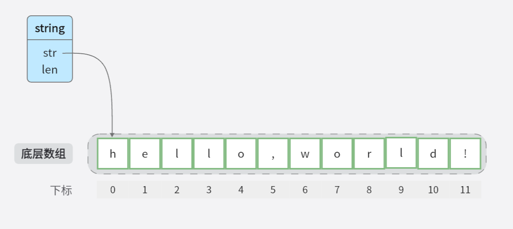

string
go version is go1.20.4
一、字符串的结构
查看 string 在运行时的结构：
这个结构体具有两个字段：
str：一个指向字符串数据的指针，使用unsafe.Pointer类型来表示。unsafe.Pointer是Golang中的特殊类型，可以存储任意类型的指针，但需要谨慎使用，因为它可以绕过类型系统的安全检查。len：一个整数，表示字符串的长度。
提示
需要注意的是，stringStruct结构体在Golang的runtime包中是非导出的，即只能在包内部使用。这是为了保护字符串的不可变性和内部结构的稳定性。
一般情况下，开发者不需要直接操作stringStruct结构体，而是使用Golang提供的字符串相关函数和方法来处理字符串。

二、基本使用探究
2.1 声明、初始化
通过 dlv 调试看看底层是如何创建这个 s 变量的：
string 的尺寸是 16
在64位的机器上，unsafe.Pointer类型占用8字节，int类型占用8字节，因此结构体的总大小为16字节
mallocgc 方法如何决定开辟的内存是在堆还是栈上
在Golang中，当需要分配内存以存储对象时，会根据对象的大小采取不同的分配方式。具体来说：
- 对于小对象（小于等于32 kB），内存分配会从每个P（处理器）的缓存中的空闲列表中分配。每个处理器都有自己的缓存，其中包含了一系列不同大小的空闲内存块。这种缓存机制可以提高小对象的分配效率，避免频繁地向堆申请内存。
- 对于大对象（大于32 kB），内存分配会直接从堆（heap）中分配。堆是一个动态分配的内存区域，用于存储较大的对象和数据结构。
通过这种分配策略，Golang可以在小对象的情况下快速分配内存，而对于较大的对象，直接从堆中分配能够更有效地利用内存空间。
2.2 基本操作
拼接
package main
import (
"bytes"
"fmt"
"strings"
)
func main() {
// 使用加号进行字符串拼接
str1 := "Hello"
str2 := "World"
result := str1 + " " + str2
fmt.Println(result)
// 使用 fmt.Sprintf 进行字符串拼接
result = fmt.Sprintf("%s %s", str1, str2)
fmt.Println(result)
// 使用 strings.Join 进行字符串拼接
strList := []string{str1, str2}
result = strings.Join(strList, " ")
fmt.Println(result)
// 使用 bytes.Buffer 进行字符串拼接
var buffer bytes.Buffer
buffer.WriteString(str1)
buffer.WriteString(" ")
buffer.WriteString(str2)
result = buffer.String()
fmt.Println(result)
// 使用 strings.Builder 进行字符串拼接
var builder strings.Builder
builder.WriteString(str1)
builder.WriteString(" ")
builder.WriteString(str2)
result = builder.String()
fmt.Println(result)
}
上述几种字符串拼接方式的优点和缺点：
| 方法 | 优点 | 缺点 |
|---|---|---|
使用加号 + |
- 简单直观的语法 - 可以直接拼接多个字符串 |
- 性能较差，每次拼接都会创建新的字符串对象 |
使用 fmt.Sprintf |
- 可以使用格式化字符串进行灵活的拼接 - 支持多种数据类型 |
- 相对较慢，需要进行格式化字符串的解析和处理 |
使用 strings.Join |
- 高效的字符串拼接方式 - 适用于拼接字符串切片 |
- 需要将字符串元素转换为切片，并使用分隔符拼接 |
使用 bytes.Buffer |
- 高效的字符串拼接方式 - 可以连续追加字符串 |
- 需要额外的内存分配，适用于大量的字符串拼接操作 |
使用 strings.Builder |
- 高效的字符串拼接方式 - 可以连续追加字符串 |
- 需要使用额外的 strings.Builder 对象 |
每种方法都有自己的优点和缺点，具体使用哪种方式取决于你的需求和性能要求。一般来说，对于简单的字符串拼接，使用加号 + 或 fmt.Sprintf 是方便快捷的选择。对于大量的字符串拼接操作或需要高性能的场景，可以考虑使用 bytes.Buffer 或 strings.Builder。如果要拼接字符串切片或可变数量的字符串参数，可以使用 strings.Join。
转换
-
string与[]byte的转换 -
string与[]rune的转换与 1. 相同
-
[]rune与[]byte的转换这两者之间是不能直接转换的，可以使用
unicode/utf8库函数来实现这些转换
go 编译器针对一些情况做了优化
for-range 中将 string 转成 []byte 是不需要做深拷贝的
以下两种从 []byte 到 string 的情况也是不需要深拷贝的
string 的一个语法糖
比较
两个字符串通常使用 == 进行比较，比较的时间复杂度取决于 持有的指针 是否相同，如果相同，时间复杂度为 O(1)，如果不同，时间复杂度为 O(n)
graph LR
a[s1.l==s2.l]--->|no|endF[diff]
a-->|yes|c[s1.p==s2.p]-->|yes|endS[same]
c-->|no|d[comp every ch]-->endS
d-->endF